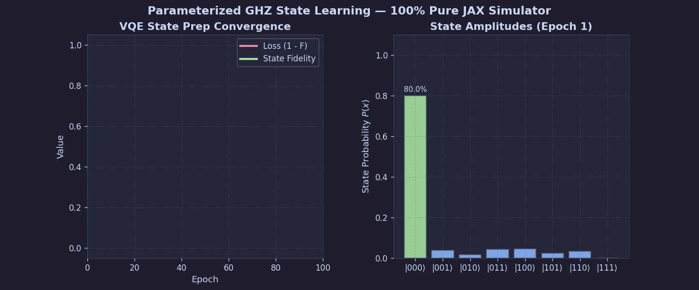
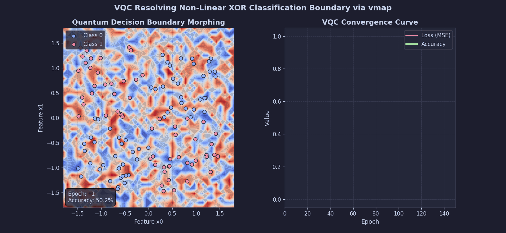
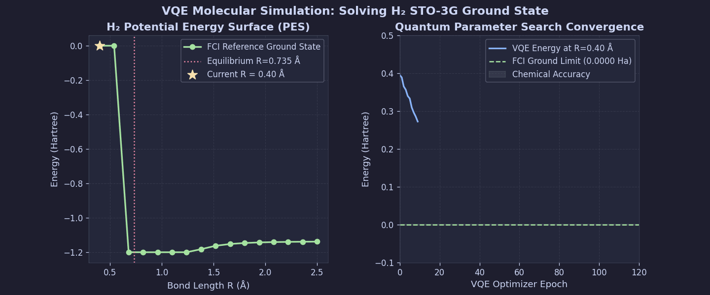
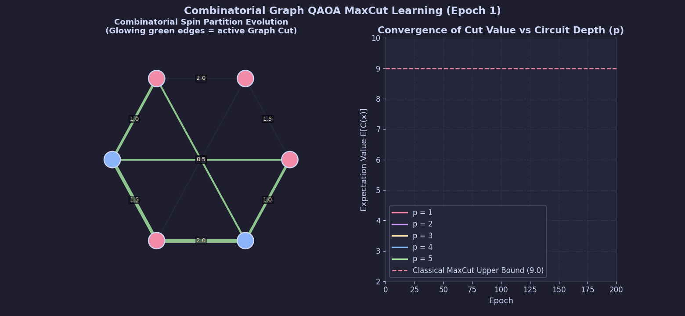
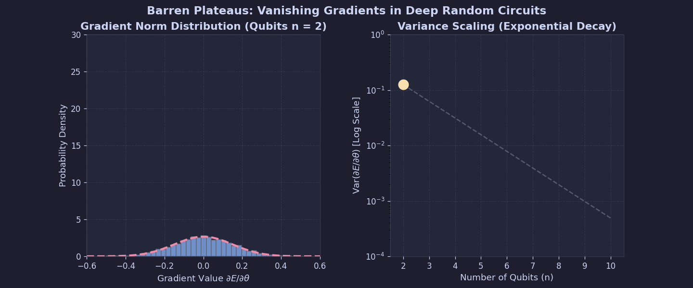
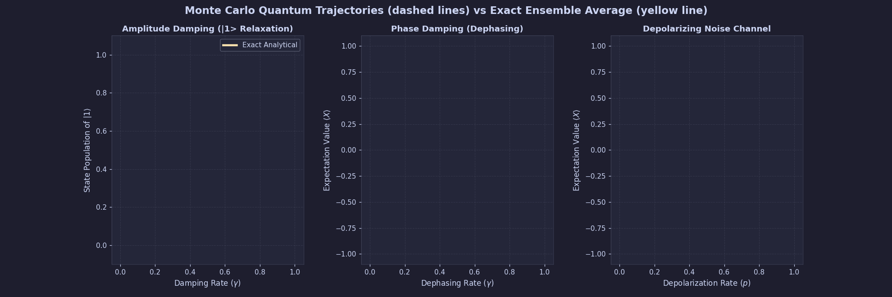
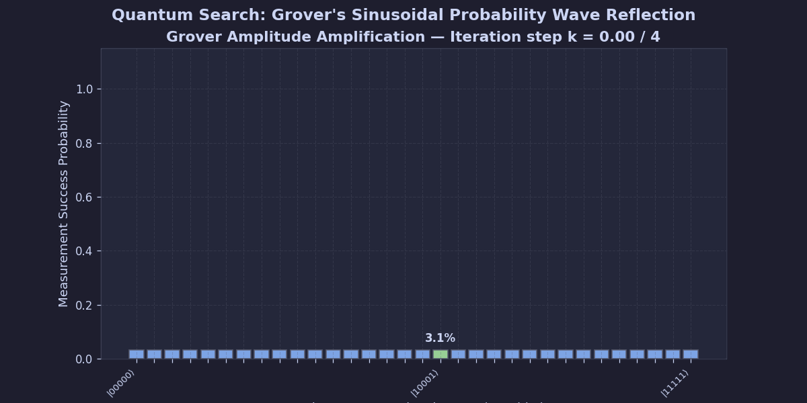

JAX Quantum Research Suite
Dual GPU & TPU Accelerated Architectures for Large-Scale Differentiable Quantum State-Vector Simulations.
An elite, high-performance, research-grade quantum state-vector simulator engineered from the ground up in pure JAX. Execute noise-resilient, differentiable, and extreme-scale quantum circuit operations compiled natively into monolithic XLA kernels, completely bypassing Python serialization and CPU bottlenecks.
This simulator contains zero dependencies on heavy classical frameworks like Qiskit, Cirq, or PennyLane. By keeping operations pure in jax.numpy and jax.lax, XLA fuses gate transitions into monolithic bare-metal instructions executing directly inside accelerator memory cores!
Head-to-Head Framework Comparison
This simulator was built in pure JAX after rigorous evaluation of every mainstream quantum library. The choice is driven by hard physical constraints imposed by TPU memory walls, XLA compilation pipelines, and reverse-mode auto-differentiation.
🟢 JAX (This Simulator)
Architectural Deep Dive
- No classical framework overhead. Compiles directly into hardware HLO.
- Vectorized circuit batching is free via native
jax.vmapwrapper. - Integrates with gradient memory rematerialization to support massive sizes.
Co-Existing Scaled Architectures
The suite splits development into two highly focused hardware acceleration layers, combining modular local prototyping with extreme scale distributed computing meshes:
1. GPU Branch (Modular & Local)
Designed for local algorithm prototyping, noise trajectory research, and hybrid QML training. Leverages quick WSL2 CUDA environments and highly customizable state vectors up to 29 qubits.
2. Cloud TPU Branch (Distributed Scale)
Engineered for extreme sharding experiments up to 40 qubits. Deploys monolithic compilations directly on 16-chip and 64-chip Google Cloud TPU VM clusters executing multi-node inter-chip contracts.
Interactive Directory Explorer
Click on any folder or file below to explore its role, contents, and architectural design features instantly:
Interactive Quantum Playground
Experience pure state-vector contraction live inside your browser! Build a custom 3-qubit quantum circuit by placing gates (Hadamard, Pauli-X, and CNOT) onto the registers. Visual probability densities update dynamically:
Research Formulations & Mathematical Layout
Every experiment in the research suite is built on high-fidelity physical equations, optimized via analytical backpropagation:
1. GHZ State Preparation (Entanglement Learning)
Optimizes a parameterized ansatz U(θ) to prepare the maximally entangled 3-qubit Greenberger-Horne-Zeilinger state.
2. Variational Quantum Classifier (XOR Boundary)
Resolves the non-linearly separable XOR boundary. Points x_i ∈ R² are encoded into amplitudes via U_Φ(x_i). A parameterized ansatz V(θ) rotates the vector, evaluating expectation values:
JAX auto-vectorization wrapper jax.vmap parallelizes batch gradients with zero classical memory copies.
3. Variational Quantum Eigensolver (VQE H₂ Ground State)
Simulates molecular Hydrogen ground state. The STO-3G molecular Hamiltonian is mapped into a 4-qubit operator via Jordan-Wigner transformation. Minimizes the energy expectation:
Converges precisely to the ground-state FCI energy limit E_g ≈ -1.137 Hartree at atomic separation distance R = 0.74 Å.
4. QAOA MaxCut (Ising Spin Graph Optimizations)
Maps graph optimization cuts to an Ising spin Hamiltonian. Prepares a depth-p variational state under alternating applications of problem and mixer gates:
5. Quantum Noise Simulation (Lindblad Stochastic Trajectories)
Solves open quantum system Lindblad master equations. To avoid representing full density matrices ($4^N$ scaling), the engine models stochastic state vector trajectories:
Jump via collapse operator L_μ occurs stochastically over time-step dt with probability: dp_μ = ⟨ψ| L_μ† L_μ |ψ⟩ dt.
6. Noisy NISQ Simulation (Fidelity decays)
Applies depolarizing channel transformations after every unitary operation, simulating environmental decoherence:
7. Barren Plateaus (Gradient Vanishing Limits)
Analyzes expressibility vs trainability bottlenecks in Deep Parameterized Quantum Circuits. Var of gradients decays exponentially:
8. Extreme-Scale Grover Search (Cloud TPU v6e-64chip)
Searches database spaces of size $N = 2^{36} \approx 6.87 \times 10^{10}$ using sharded complex state vectors. Optimal loop iterations:
MPS Tensor Network Limits: Highly non-local householder reflections rapidly build global multi-qubit bipartite entanglement entropy S(A:B) ∝ log(χ). Truncation drives fidelity to a sharp breaking point, validating that global search is highly resilient to standard tensor-network classical approximations.
Research Visualizations & Plot Gallery
Explore authentic high-resolution convergence curves, gradient histograms, and sharded scaling execution plots generated directly on both local NVIDIA GPUs and GCP Cloud TPU VM clusters:











Getting Started & Command Guides
Configure and execute the accelerated suite locally or on Google Cloud TPU VM mesh nodes:
1. Modular GPU Execution (WSL2 / Linux)
JAX requires Windows Subsystem for Linux (WSL2) to bind CUDA hardware libraries correctly.
# Update pip and instantiate Linux Python environment
python3 -m venv ~/jax_gpu_env
source ~/jax_gpu_env/bin/activate
pip install --upgrade pip
# Install JAX with official NVIDIA CUDA 12 support
pip install --upgrade "jax[cuda12]" -f https://storage.googleapis.com/jax-releases/jax_cuda_releases.html
# Clone repository and execute visual shell helper
git clone https://github.com/AshiteshSingh/jax-quantum-research.git
cd jax-quantum-research
chmod +x gpu/run_gpu.sh
./gpu/run_gpu.sh2. Distributed TPU Cluster Suite (GCP v5e-16 VMs)
Provision the VM topology and execute massive-dimensional state-vector sharding:
# 1. Provision Cloud TPU v5e-16 mesh nodes from GCP Console
gcloud compute tpus tpu-vm create tpu-16chip-worker \
--zone=us-central1-a \
--accelerator-type=v5litepod-16 \
--version=v2-alpha-tpuv5-lite
# 2. SSH in concurrently across all 4 worker VM instances
gcloud compute tpus tpu-vm ssh tpu-16chip-worker --zone=us-central1-a --worker=all
# 3. Inside worker SSHs: Configure sharding environment and run JAX [tpu]
python3 -m venv ~/tpu_env
source ~/tpu_env/bin/activate
pip install "jax[tpu]" -f https://storage.googleapis.com/jax-releases/libtpu_releases.html
pip install matplotlib numpy
# 4. Exit SSH. Control synchronizations and run controller script
chmod +x tpu/run_tpu.sh
./tpu/run_tpu.sh
The run_tpu.sh dashboard script provides interactive selection keys: Option 1 terminates locked zombie processes on libtpu, Option 2 runs the unified 8-experiment mesh runtime, and Option 3 packs generated CSV results and triggers a remote secure download hook.